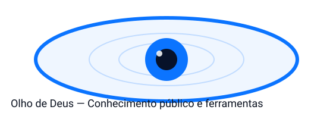

OLHODE DEUS
REDE ATIVA • FONTES PÚBLICAS
CENTRAL DE INTELIGÊNCIA PÚBLICA /// EM PORTUGUÊS
Veja o pulso
do agora.
Sinais do Brasil, Portugal e do mundo — selecionados por relevância, organizados para leitura rápida.
ÚLTIMA SINCRONIA
Conectando…
Aguardando sinais
LEITURA PRIORITÁRIA
Sinais em destaque
FLUXO CONTÍNUO
Radar de notícias
Nenhum sinal corresponde ao filtro atual.